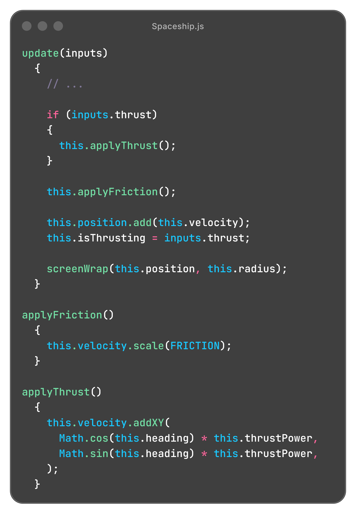
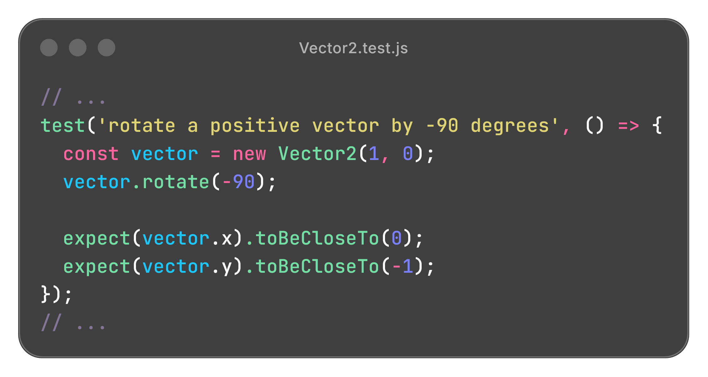

JavaScript • HTML5 Canvas • HTML/CSS
View GitHub RepoA browser based Asteroids game built with vanilla JavaScript and the HTML Canvas API, featuring real time movement, shooting, collision detection, and wave based progression. The project uses reusable entity classes and vector based math to manage movement, rotation, projectiles, asteroids, and visual effects.
The game is organized into separate modules for the main game loop, input handling, game entities, and reusable math utilities. Entity classes manage their own movement and behavior, while the core loop coordinates updates, rendering, collisions, and wave progression.
asteroids-app/
├─── core/
│ ├─── constants.js
│ ├─── input-listener.js
│ └─── main.js
├─── entities/
│ ├─── Asteroid.js
│ ├─── Debris.js
│ ├─── Particle.js
│ └─── Spaceship.js
├─── utils/
│ ├─── Vector2.js
│ ├─── Vector2.test.js
│ └─── math-utils.js
├─── index.html
├─── style.css
└─── package.json
core/main.js coordinates initialization, frame updates, rendering,
collisions, spawning, and progression between waves.
entities/ contains the spaceship, asteroids, particles, and debris, with
each class responsible for its own state, movement, and drawing behavior.
core/input-listener.js tracks keyboard and touch controls independently
from the game logic.
utils/Vector2.js and math-utils.js provide reusable vector
and geometry operations for movement, rotation, distance calculations, and collision
logic.
The game combines continuous player input, vector based movement, collision detection, and dynamically managed entities inside a real time Canvas game loop. Asteroids, projectiles, debris, scoring, lives, and wave progression are updated independently on each animation frame.
The spaceship uses a velocity vector rather than directly changing its position, allowing thrust, momentum, friction, and rotation to combine into continuous movement.
Thrust is calculated from the ship's current heading using sine and cosine, then added to its velocity before the position is updated.
Velocity persists between frames and is gradually reduced by friction, allowing the ship to drift naturally after thrust is released.
Left and right inputs adjust the ship's heading, which is reused for movement, projectile direction, and rendering its rotated geometry.
Shots originate from the calculated nose of the ship and travel along its current heading, with a firing cooldown preventing an unlimited stream of projectiles.
A shared input state object maps both keyboard and mobile touch controls to the same gameplay actions, allowing the game logic to operate independently of the input method.
The spaceship and asteroids reappear on the opposite side of the Canvas when they move beyond its boundaries.

Asteroids are generated with randomized positions, velocities, and outlines so each wave produces different movement patterns and shapes.
Each asteroid generates an irregular eight vertex outline using randomized normalized distances from its center.
Large asteroids begin outside a randomly selected Canvas edge and receive a velocity generated from a random direction and size dependent speed range.
Destroying a large asteroid creates two medium asteroids, while medium asteroids divide into two small asteroids before being removed completely.
Large, medium, and small asteroids use different radii, movement speeds, and score values, with smaller targets moving faster and awarding more points.
The game increases the starting asteroid count as waves progress, eventually capping the number of newly spawned large asteroids to a predetermined configurable value.
Collision checks connect the independent game entities and determine when projectiles, asteroids, and the player affect the current game state.
Circular collision bounds compare the squared distance between entity positions against their combined radii, avoiding an unnecessary square root calculation on every check.
Destroying an asteroid awards points according to its size before any child asteroids are spawned.
A collision between the ship and an asteroid removes a life and returns the ship to the center of the Canvas.
Destroyed asteroids and ships generate short lived debris particles with randomized velocities to provide a visual explosion effect.
Destroyed asteroids and projectiles, expired debris, and off screen projectiles are filtered from their collections as the game runs.
Menu, active gameplay, and game over states control what is updated and rendered, with restart logic resetting lives, score, wave progression, entities, and the player's ship.
The project uses Vitest to verify the reusable Vector2 math utility that
supports movement, positioning, and collision calculations throughout the game. Tests
cover both mutating instance methods and static operations across positive, negative,
floating point, and zero value inputs.
Tests vector addition, subtraction, and scalar multiplication using a range of coordinate values.
Validates magnitude, squared magnitude, distance, and squared distance calculations used by movement and collision systems.
Verifies normalized vectors and rotational transformations across positive and negative angles, including zero magnitude handling.
Tests both operations that modify an existing vector and equivalent static methods that
return a new Vector2 instance.

Adding mobile controls required the game to support both keyboard and touch input without maintaining separate gameplay logic for each platform. I structured the input system around shared action states so keyboard events and on screen controls could trigger the same movement, rotation, and firing behavior while keeping the game entities independent of the input method.
Making a fixed ratio Canvas game usable on mobile introduced layout issues that were not present on desktop, particularly with browser UI occupying part of the available screen space on iOS Safari. I adjusted the responsive layout, control positioning, and landscape presentation so the Canvas and touch controls remained accessible across different viewport sizes.